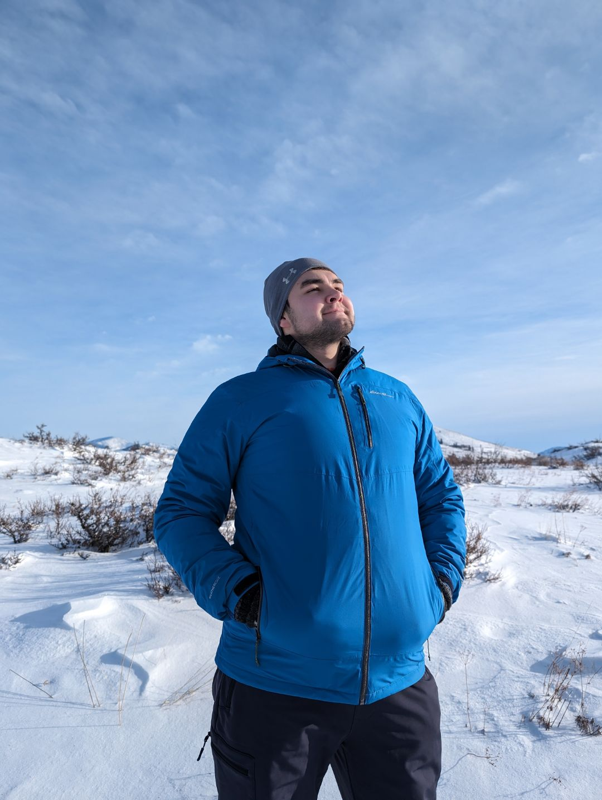

Jonas Loeser
I live in the Pacific Northwest. I was born in Germany and grew up here, and I just finished a master’s in computer science at Western Washington University. My thesis taught a model to pick out Maya ruins in LiDAR scans of Mayapán, under canopy you can’t see through.
I’ve been a fan of technical board games for a long time. As a kid I played a lot of chess and topped out at 1700 rapid on Lichess. Now it’s Magic every week, either at my LGS with around 30 regulars or online with a couple close friends. A while ago I found Dominion and it became a favorite fast. The randomizer here exists because picking the ten cards is the slowest part of sitting down to play.
At home I run a Jellyfin server off movies I checked out of the library, so our favorites are always right there. A replacement for Google Photos is next.
I’m still an amateur, but I love going backpacking, a handful of trips in so far. Carrying everything you need on your back is very satisfying. I bike and forage for mushrooms too. I haven’t been bikepacking yet, but it seems amazing.

Running on this site
Dominion Kingdom Generator
Deals a playable 10-card Kingdom out of every expansion I own. Someone else had already built one of these; I wanted one that worked the way I wanted it to, on my own site, so I’ve been picking at this one ever since.
Chain Store Map
Every American location of ten big chains, using OpenStreetMap and Overture data. I built it in a day after realizing there isn’t a single Aldi in the Pacific Northwest.